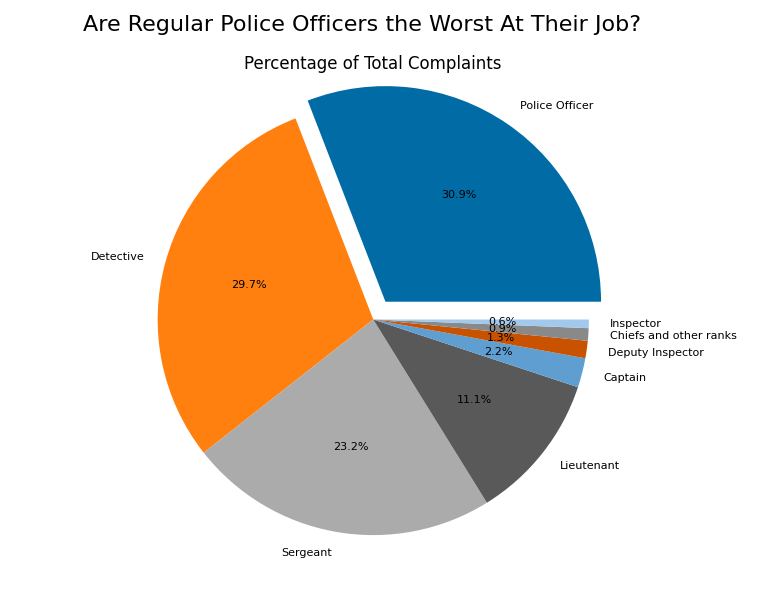
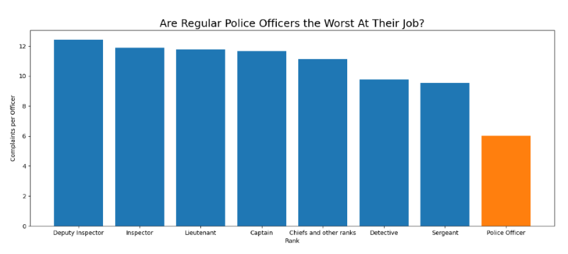

Proposition: Regular Police Officers are the Worst At Their Job
FOR the Proposition

Design Decisions and Rationale:
- Displayed informaiton in a pie chart (1)
A pie chart clearly demonstrated differences between groups, especially larger ones. I considered a bar graph, but a pie chart allowed for better perception. - Exploded the largest portion of the pie chart (1)
Having a slice pop out provides further emphasis on the highest percentage of regular police officers. Bolding the percentage number could've worked as well, but exploding the chart makes it stand out more. - Grouped by general ranks (-1)
Many ranks of same superiority combined allowed for regular police officers to have highest % of complaints since they have the most officers. Having less slices resulted in better visibility and less distractions than more slices. - Used colorblind-friendly color scheme (2)
Tableau colorblind theme worked well to distinguish between each section as well acknowledge the colorblind.
AGAINST the Proposition

Design Decisions and Rationale:
- Displayed information in a bar graph (1)
The graph easily shows the large difference in bar lengths better than other plot types. Same scale length uses perceptual work rather than cognitive work for the reader, making it easier to understand. - Used complaints per officer (-2)
Using per officer rates along with general groups created disparity with the large group of normal police officers. Different groupings did not show the same effect as complaint per officer. - Grouped by general ranks (-1)
Bigger groups resulted in less complaints per officer for the regular officer. Using less bars reduces congestion and simplifies the graph while enhancing the differences. Grouping by more specific ranks create more noise and does not show that normal police officers have the lowest complaint rate. - Coloring the regular police officer rank differently (1)
This provides emphasis and brings attention to the smallest bar for easier comparison. An annotation would crowd the visualization, so a contrasting color would be simpler and more effective. The orange color also comes from the Tableau colorblind theme to acknowledge the colorblind.
Final Reflection
Making both visualizations required using several methods, both earnest and deceptive, to support or oppose the proposition.
Using different plot types allowed for more versatility to emphasis different portions of each plot, allowing the graph to showcase exactly what I wanted.
Finding ways to group the plots was challenging as I needed specific groupings to have opposing ideas clash against each other.
At first I used specific abbreviated officer ranks to group, but there were too many groups.
However, I noticed the non-abbreviated rank columns had general groupings, so those were better to use since there was no need to explain each abbreviation.
Using the total number of complaints and calculating percentages was a simplistic way to create deceptiveness because most police officers are of the lowest rank.
Even if they had lower complaint rate as shown in the visualization against the proposition, the raw numbers would still show more total complaints.
After I noticed this, I decided to plot the complaint per officer to show a large deviation from the other groups.
This made the smaller groups have higher per officer ratings while the lowest ranking officers had a large enough group to lower the rate.
It worked surprisingly well as normal officers had a much lower complaint rate compared to the rest, making it easy to show differences.
A bar graph was more effective to show the smallest group while a pie chart was more effective to show the largest group.
These techinques created polarizing views, yet still have an ethical aspect to both visualizations.
I believe this analysis is still ethical as no data was purposefully omitted, but rather specific groupings were made to show different ideas.
Some may say these groupings are considered misleading because of the way the data was grouped, but all data is still present, and there were no violations of normal conventions.
As long as there was no deliberate filtering of important data, these choices are considered persuasive.